概要
Web ブラウザで Azure のポータルから Azure の仮想マシンに接続出来るサービスです。
手順
サブネット構築
Azure のポータル画面で [仮想ネットワーク] をクリックします。
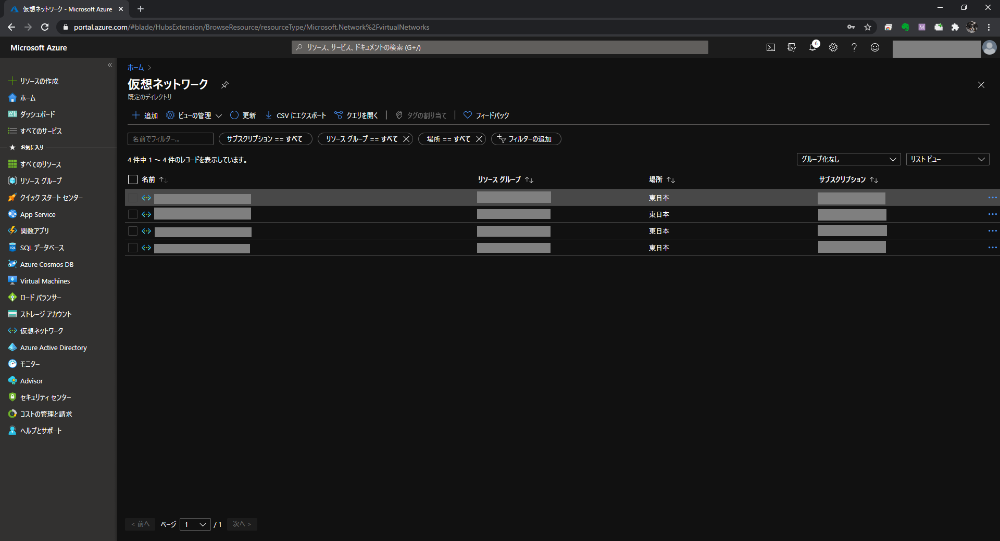
サブネットを追加したい仮想ネットワークをクリックします。

[＋サブネット] をクリックします。

下記内容を入力し [保存] をクリックします。
名前は必ず AzureBastionSubnet とします。
| 項目 | 設定 |
|---|---|
| 名前 | AzureBastionSubnet |
| サブネット アドレス範囲 | 10.0.1.0/24 |
| IPv6 アドレス空間の追加 | 無効 |
| サービス | 未選択 |
| サブネットをサービスに委任 | なし |
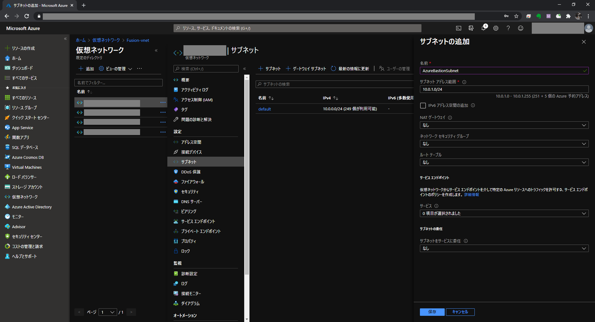 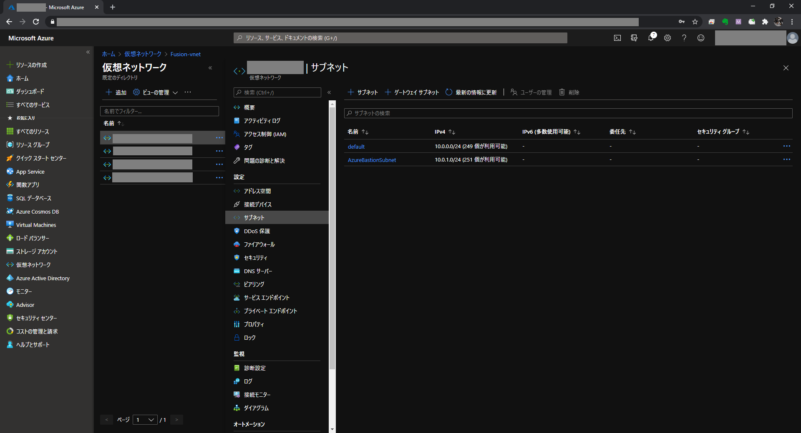
Bastion 構築
Azure のポータル画面で [Bastion] をクリックし [＋追加] をクリックします。

下記内容を入力し [確認と作成] をクリックします。 ${ResourceGroupName} にはリソースグループを，${SubscriptionName} にはサブスクリプションを指定します。
| 項目 | 設定 |
|---|---|
| サブスクリプション | ${SubscriptionName} |
| リソースグループ | ${ResourceGroupName} |
| 名前 | ${ResourceGroupName}-vnet-bastion |
| 場所 | 東日本 |
| 仮想ネットワーク | ${ResourceGroupName}-vnet |
| サブネット | AzureBastionSubnet(10.0.1.0/24) |
| パブリック IP アドレス | 新規作成 |
| パブリック IP アドレス名 | ${ResourceGroupName}-vnet-ip |
| パブリック IP アドレスの SKU | Standard |
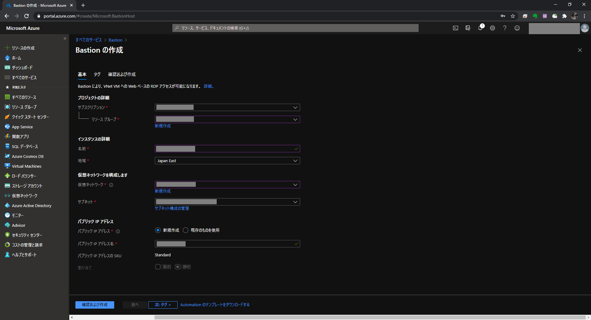
[作成] をクリックします。
 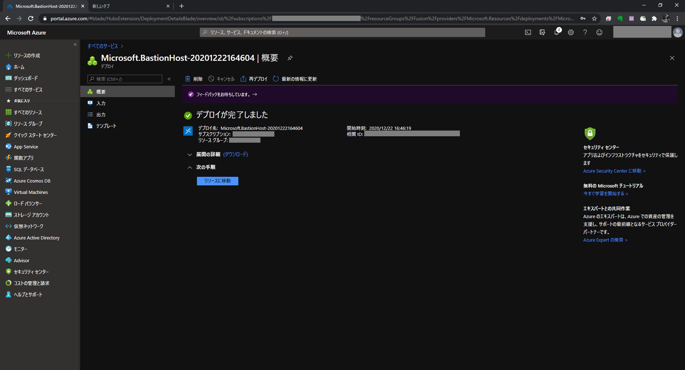
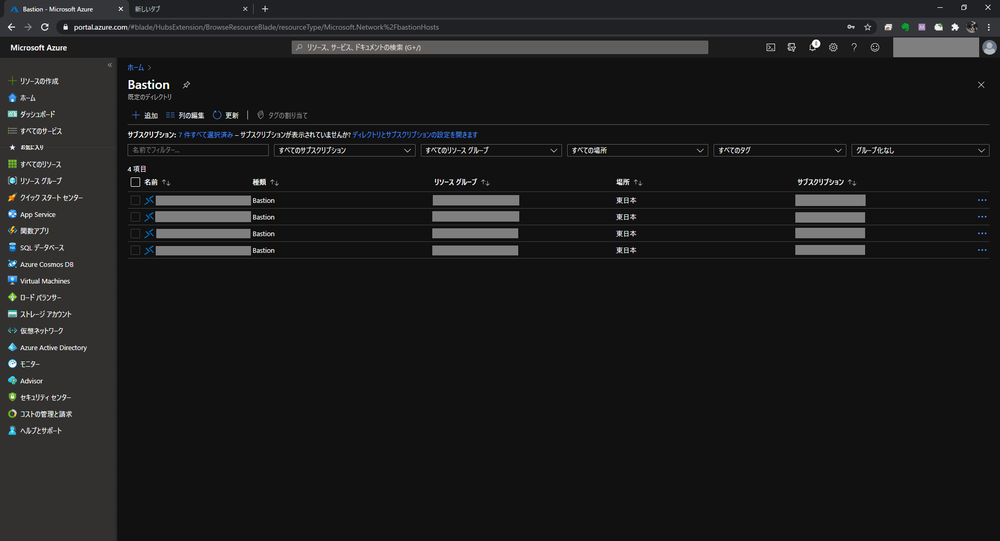
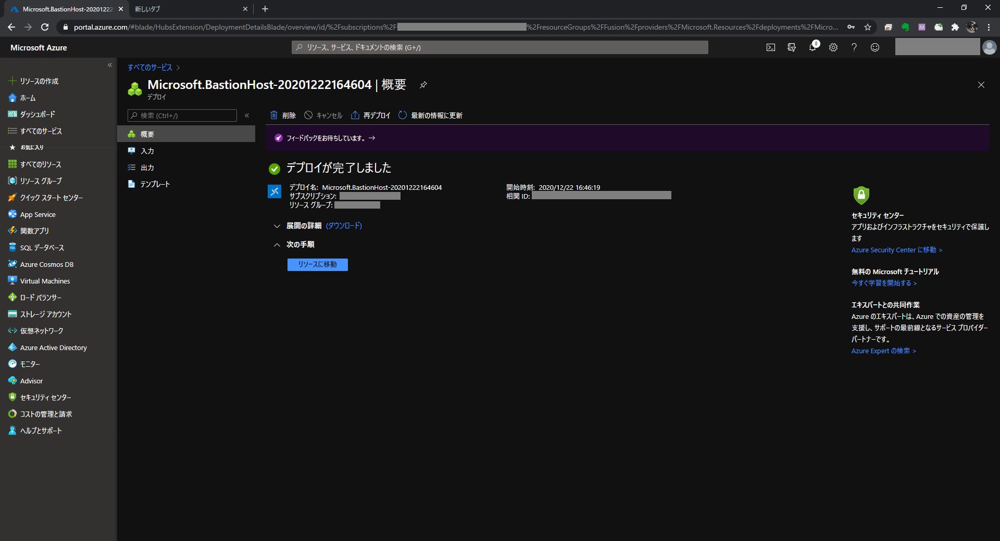
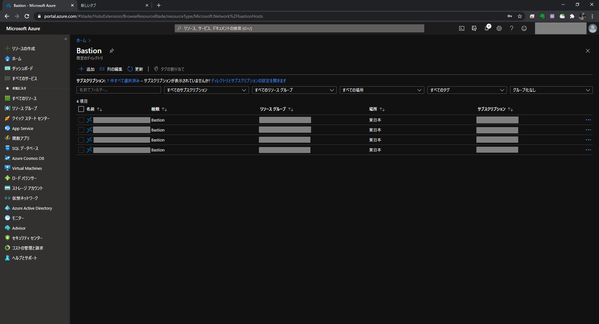
Bastion で仮想マシンに接続する
Azure のポータル画面で仮想マシンを選択し，[接続] / [Bastion] をクリックします。
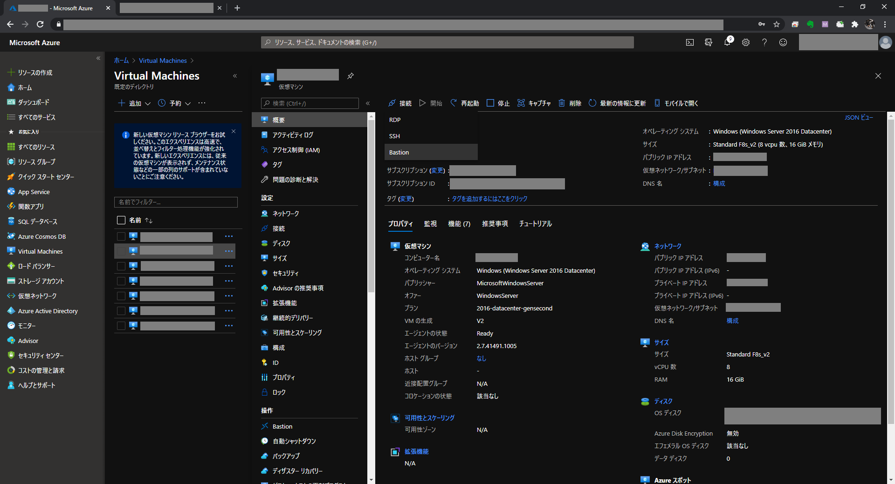
[Bastion を使用する] をクリックします。
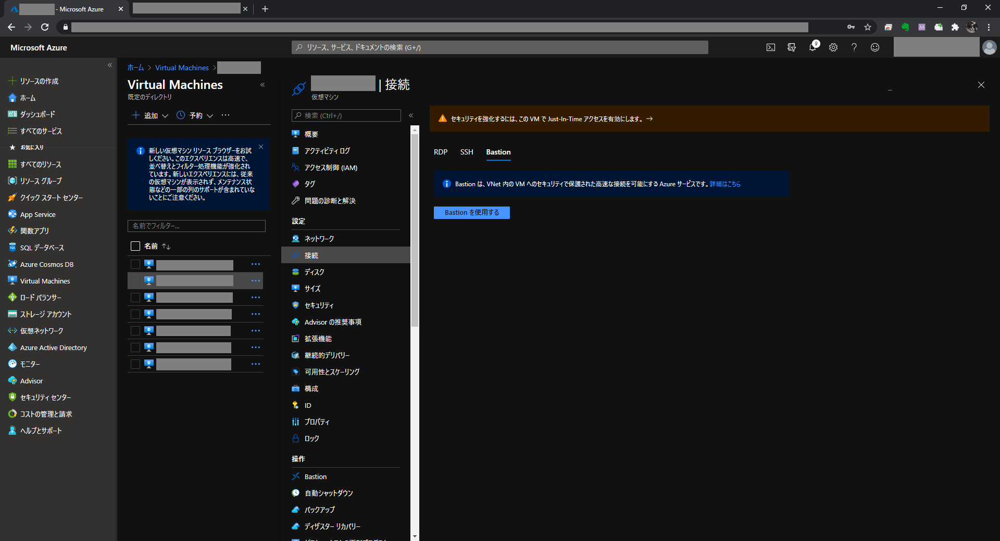
[ユーザ]，[パスワード] を入力し [接続] をクリックします。
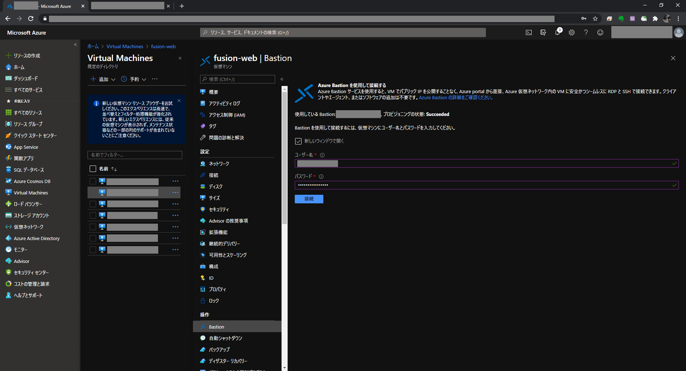